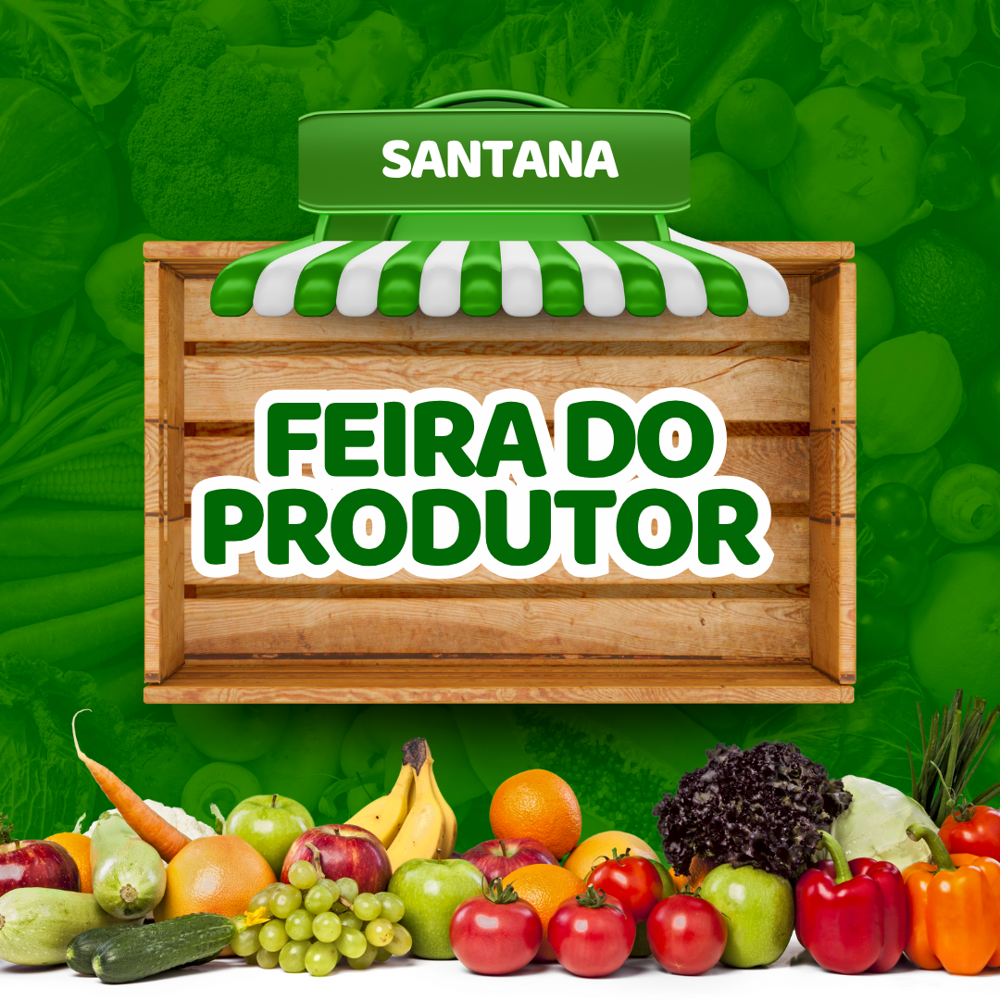

Festejando a conexão campo cidade
Descubra a riqueza dos produtos frescos diretamente dos produtores rurais para sua mesa
Encontre uma feira próximaA Feira do Produtor Rural é um espaço de encontro entre o campo e a cidade, onde agricultores familiares comercializam seus produtos diretamente ao consumidor, sem intermediários.
Este modelo de comercialização valoriza o trabalho do produtor rural, oferece produtos mais frescos e com preços mais acessíveis à população urbana, além de fortalecer a economia local.
Mais do que um espaço de compras, a feira é um ambiente de troca de saberes, valorização da cultura rural e fortalecimento dos laços comunitários.

Alimentos colhidos recentemente, preservando nutrientes e sabor
Sem intermediários, o produtor recebe mais e o consumidor paga menos
Menor pegada de carbono com redução no transporte e embalagens
Fortalecimento dos laços sociais e da economia local
Verduras e legumes frescos, colhidos no dia
Frutas da estação, cultivadas com carinho
Queijos, requeijão e outros derivados do leite
Mel puro, própolis e produtos apícolas
Pães, bolos e biscoitos caseiros
Peças artesanais feitas por mãos rurais
Foto
Especialidade: Hortaliças Orgânicas
Produtores há mais de 20 anos, a família Silva cultiva hortaliças sem uso de agrotóxicos em sua propriedade de 5 hectares.
Foto
Especialidade: Queijos e Doces
Com receitas tradicionais passadas de geração em geração, Dona Maria encanta os clientes com seus queijos e doces caseiros.
Foto
Especialidade: Frutas
Em seu pomar diversificado, Seu José cultiva frutas da estação com técnicas que respeitam o meio ambiente e valorizam o sabor natural.
Praça Central
Terças e Quintas: 7h às 12h
Mapa
Parque Municipal
Quartas e Sábados: 15h às 20h
Mapa
Estacionamento do Shopping
Domingos: 8h às 14h
Mapa
"Comprar na feira mudou minha relação com a alimentação. Conhecer quem produz o que como me fez valorizar mais cada alimento."
"Como produtor, a feira me deu independência financeira e reconhecimento pelo meu trabalho. Ver o sorriso dos clientes ao provar meus produtos não tem preço."
"Levo meus filhos toda semana para que entendam de onde vem o alimento. É uma aula prática de educação alimentar e respeito ao meio ambiente."
Associação dos Produtores Rurais
Telefone: (41) 3333-4444
Email: contato@feiradoprodutor.com.br
Endereço: Rua das Flores, 123 - Centro